The timer knows your stage time.
Your camera knows every shot.
Splitsmith finds the start beep and every shot in your head cam's audio. Check them, break the stage down, see where the time went, and line up your squad.
Open source MIT · any camera with a microphone · runs on your machine, nothing is uploaded · hosted by invitation
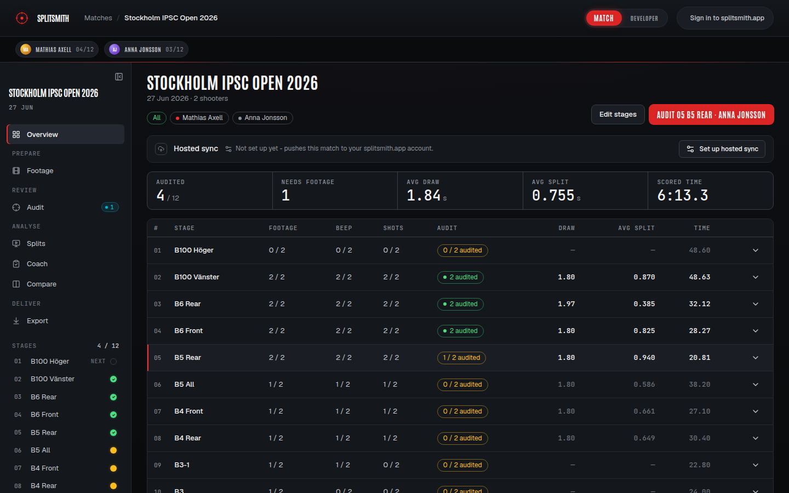
One stage, start to finish.
From head cam to finished video.
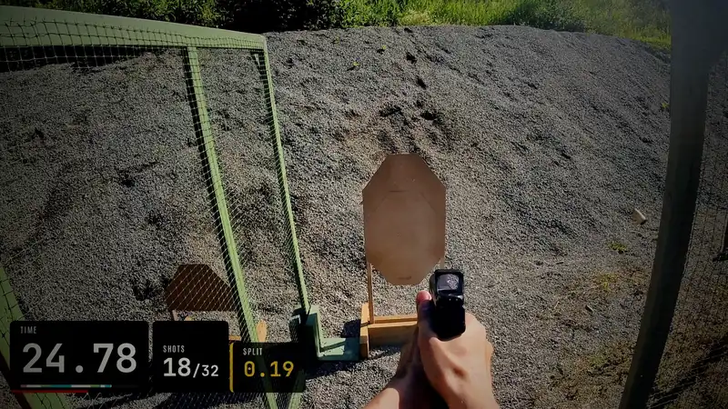
Head cam in. Splits out.
The fast cut. The styles it flashes are in the gallery below.
Upright, as a ShortPrepare. Review. Analyse. Deliver.
One match, the whole squad's footage. Every stage shows what it needs next.
A pile of videos, sorted
Point it at a folder from any number of cameras, in any order. Each video is matched to its shooter and stage by the scorecard times, head cam first. A camera with a wrong clock asks once: name one clip and the rest follow. Desktop app.
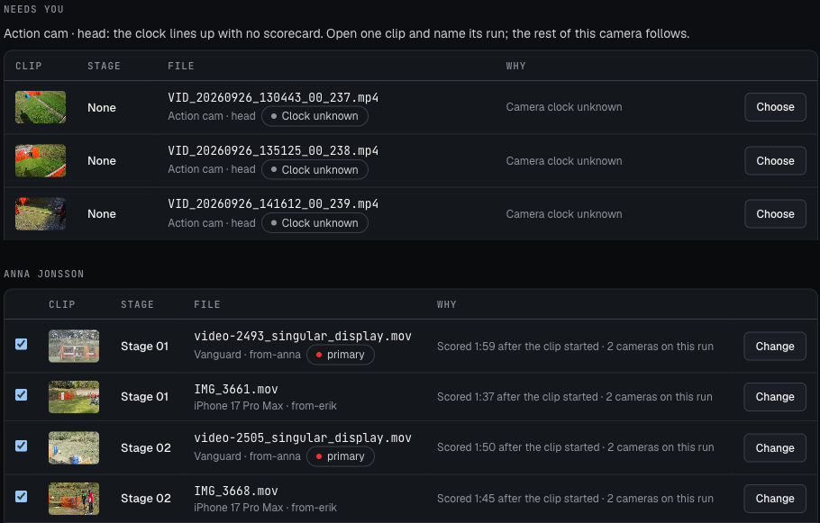
Every shot, on the waveform
Confirm the beep, and the shots appear on the stage audio. Reject an echo, add a missed shot, jump to the next flag. A second camera plays as an inset on the same beep; C swaps the two.
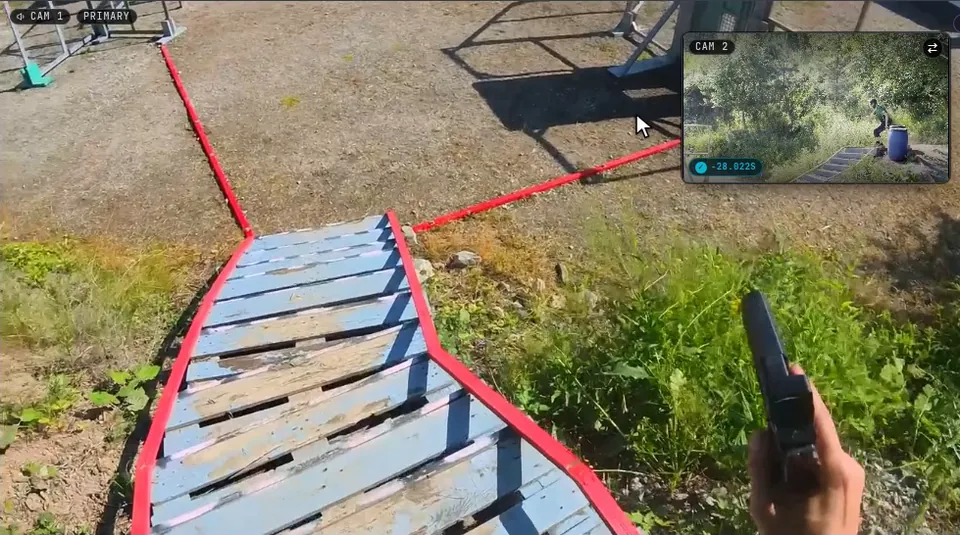
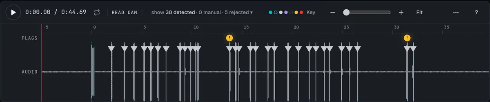
The shot table
Time, split and class for every shot. Play the stage and the table follows.
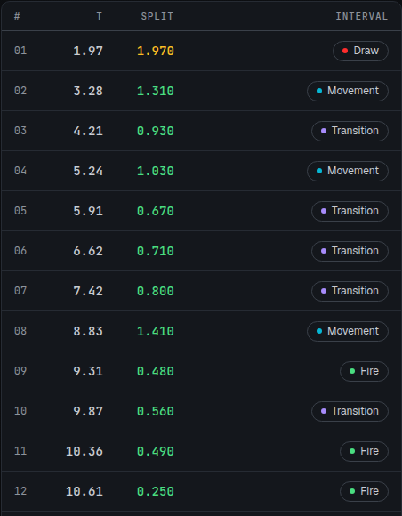
Draw, movement and reloads, as regions
Breakdown proposes your draw, movement and reloads. Keep them, drag an edge to the frame, or draw your own. Exposed reload time is the part of a reload spent standing still. Review proposals on your phone too.
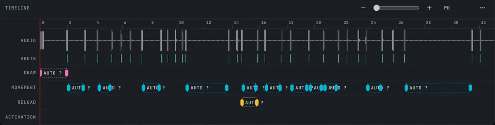
Where the seconds went
Your time per stage, split by type and set against your own match, with the outliers named. Leave notes and flags on shots and stages.
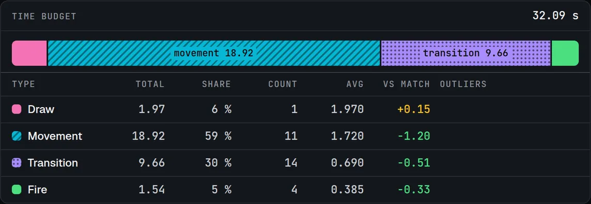
Your squad, aligned to the beep
Every shooter's run on one clock, with the gap at each last shot.
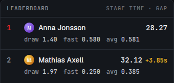
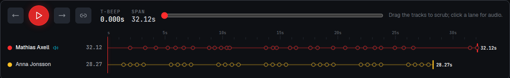
Pick a Look, see it on your footage
Pick a Look, then the cards, summaries, overlay and transitions, each previewed on your own footage before you render. Save it as a preset. The MP4 can go straight to YouTube.
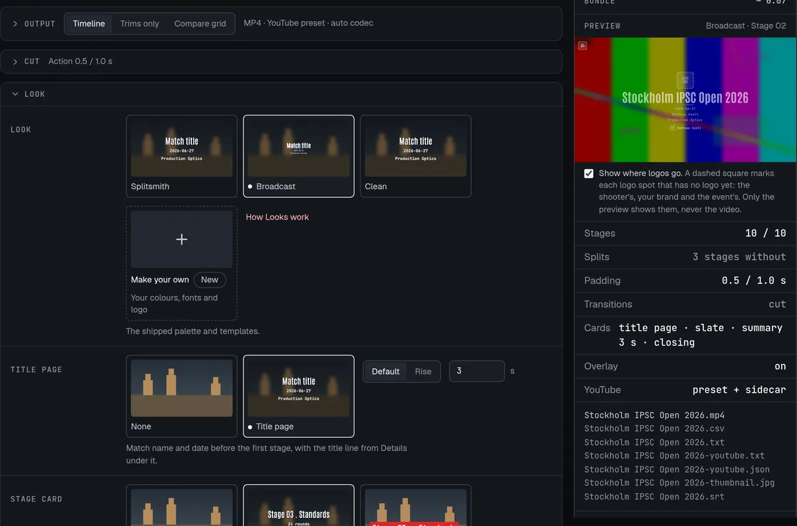
Every card, every style. At your pace.
Every card, overlay and transition each Look draws.

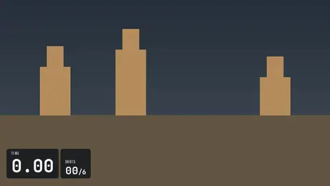
Moves
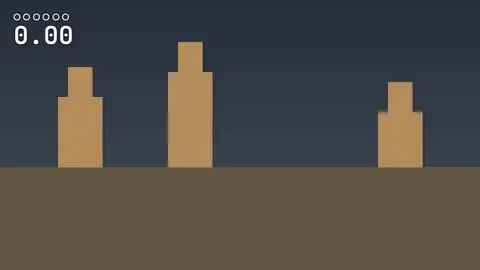
Moves
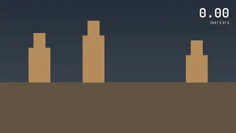
Moves
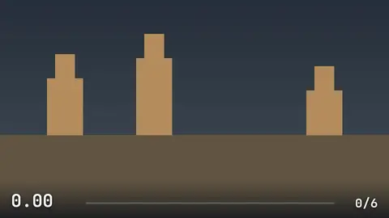
Moves
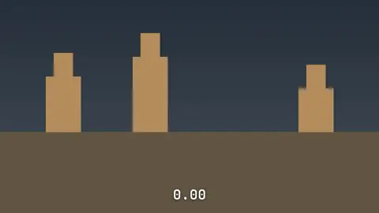
Moves
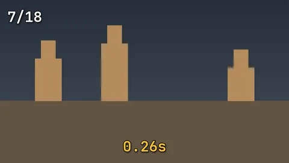
Shown over a stand-in scene with sample figures. Make your own Look to change colours, fonts and logo, or, on the desktop app, the templates.
Keep it in the app, or take it out.
Coach and compare
Video, timeline and table in sync, notes on every shot, the whole squad side by side.
- On your own machine, or hosted at my.splitsmith.app by invitation
- The desktop app keeps a synced match in step with your hosted account
- On a phone: confirm beeps, audit shots and review Breakdown proposals
- Share a read-only link to a match or a stage
A marker per shot
An FCPXML timeline, stages back to back, a marker on every shot. Step through with M / Shift+M.
- Per stage or the whole match
- Transitions, slates and lower thirds
- Markers for the reloads and movement you kept
- Other cameras synced on the beep, one as a corner inset
- FCP 7 XML for Premiere and Resolve
Ready to post
A finished video with the overlay burned in, or the whole squad in one grid.
- Seven overlay styles: Classic, Plate, Pips, Ticker, Timeline, Minimal and Broadcast
- Sixteen transitions, plus stings in your Look's colours
- A summary after each stage and a match summary at the end
- Upright for Shorts and Reels, clear of their captions and buttons
- Your brand and the shooter's logo where you choose; an end-screen closing card
- Upload to YouTube with chapters, captions and a thumbnail
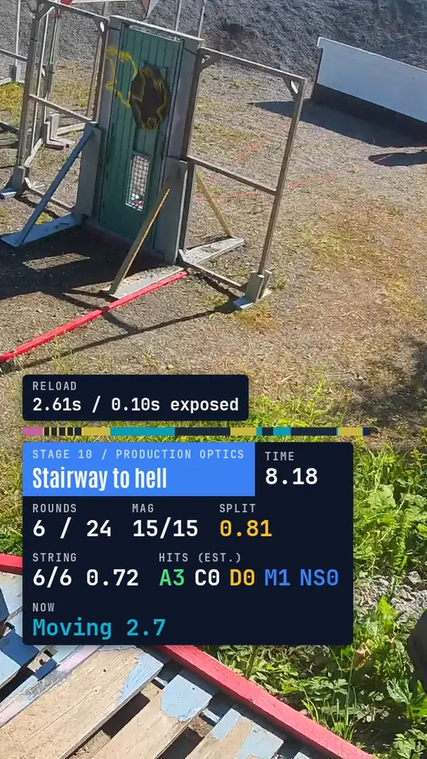
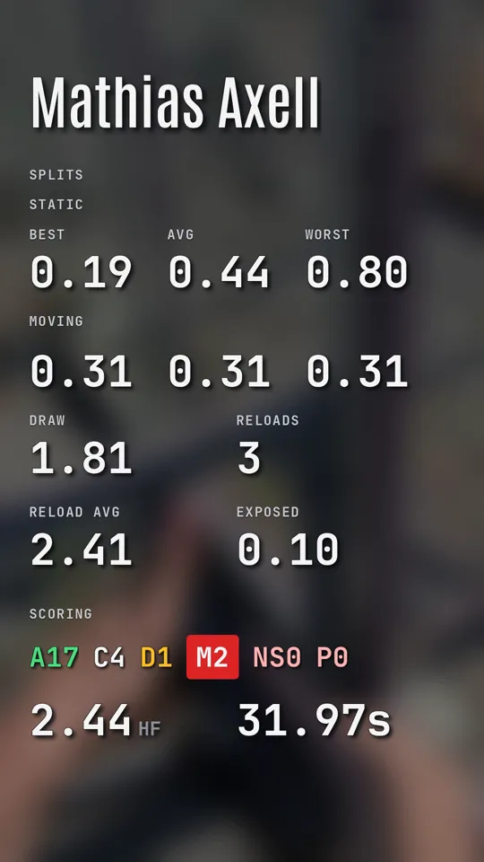
Two minutes to your first stage.
Install and launchDownload the desktop app for macOS or Linux, or install with uv and open it in your browser. The first start downloads the detection models.
Add your footageAny camera with a microphone, one or several. Each clip is matched to its shooter and stage by the scorecard times.
Confirm the beeps, audit the shotsConfirm each beep it found. Detection runs, you check the shots, and the splits are yours.
Download from the releases page, then:
# macOS: open the .dmg and drag Splitsmith to Applications
# Debian, Ubuntu: the .deb also installs the splitsmith command
$ sudo apt install ./splitsmith-desktop_*_amd64.deb
# Other distributions: the AppImage (on Ubuntu 24.04+, use the .deb)
$ chmod +x Splitsmith-*-x86_64.AppImage && ./Splitsmith-*-x86_64.AppImage
$ uv tool install splitsmith
$ splitsmith ui
$ splitsmith single --video stage3.mp4 --time 32.12 \
--stage-name "B6 Rear" --stage-number 3 --output ./b6-rear
$ docker pull ghcr.io/mandakan/splitsmith:latest
$ docker compose -f docker-compose.yml -f docker-compose.ghcr.yml up -d
my.splitsmith.app, by invitation.
The same app in your browser: upload from any device, sync from the desktop, share links, and let a coach or squadmate comment. Leave your email for an invite.
Trained on audited stages, not on a demo reel.
The shot detector is trained on real match audio with every shot time checked by hand, from many cameras and mounts. Today that is the maintainer's stages and a few squadmates'.
Placed on the start of your timer's tone, shown on a spectrogram, so Snap finds it even under a shot.
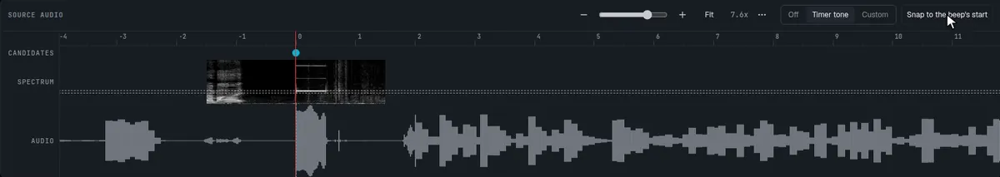
Interval classesA gap under 1.0 s is fire, under 2.0 s a transition, longer is movement. Change any of them in Breakdown.
RegionsDraw, movement, reload and activation are also regions on the timeline, so a movement can span several shots. They give you moving and standing splits and reload times.
Reads